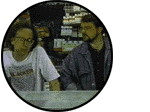

 |
Split Screen is an irreverent, sly magazine format show which takes an inside
look at the tremendous diversity of filmmaking in the United States. Created, written and hosted
by long-time producer/talent scout John Pierson, this half-hour series breaks through all the
highbrow stuff to illustrate why independent moviemaking is so much fun. Pierson travels all
over the country with noted filmmakers, many of whom he helped discover and wrote about in his
recent book Spike, Mike, Slackers & Dykes: A Guided Tour Across a Decade of American Independent
Cinema, and talented unknowns, some of whom will comprise the next wave.
On Split Screen you will see:
|
[Episode #1] [Episode #2] [Episode #3] [Episode #4] [Episode #5] [Episode #6] [Episode #7] [Episode #8] [Episode #9] [Episode #10]